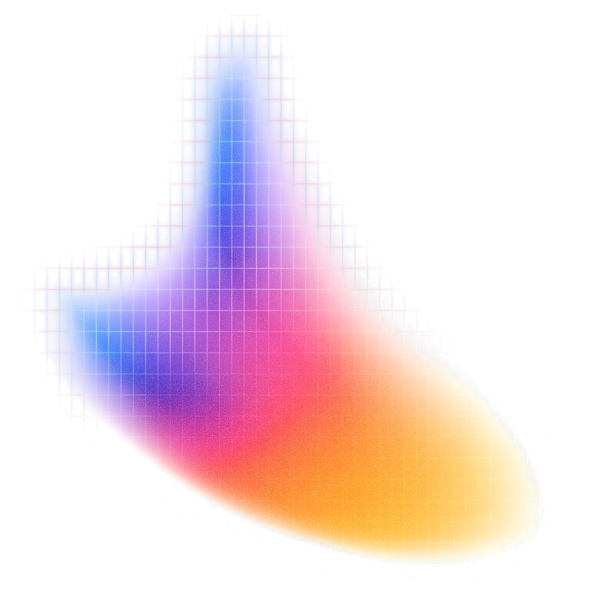
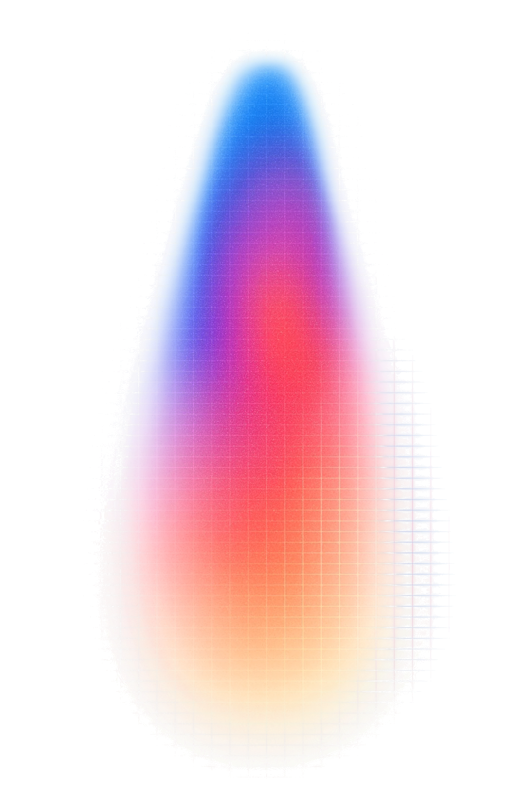
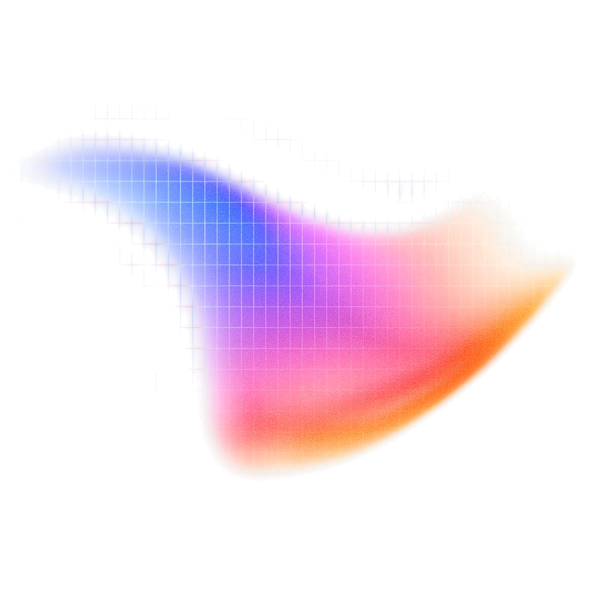

Build, Connect of Buy?
Je AI leert apps gebruiken.
Open je AI in je eigen map. Typ:
Wat er nog komt
Pitch 1: wat raad je aan?
Een video van 3 minuten · 5% · op Canvas · dinsdag 1 december, 23:59
2 december: feedback pitch 1, in de les.
Zeg eerst wat je aanraadt.
Na 3 minuten kijk ik niet meer. Dat zijn ongeveer 400 woorden.

Een AI kan alleen tekst schrijven.
Hoe leest hij dan je agenda?
Kijk goed wat er gebeurt
Zo gebruikt een AI een tool
Gaat hij door tot het af is? Dan heet dat een agent.
Drie manieren om AI in je bedrijf te krijgen
Op het einde kies jij: wat raad je je bedrijf aan? Dat telt voor 10% van je memo.
Build
Je maakt het zelf.
Een skill is een bestand met instructies
Vandaag maak je je eigen skill.
Wat vraag je elke week opnieuw aan je AI?
Hier staat je skill
In je eigen map. Sluit je AI en open hem opnieuw. Typ /naam (Codex: $naam).
⚠️ Je map staat in een publieke repo. Zet niets privé in je skill.
Skills in je desktop-app
Je skill uit Claude Code werkt ook in de app. Het is hetzelfde bestand.
Een sub-agent: een AI die werk doorgeeft
Waarom? Een vol contextvenster maakt een AI slechter (week 3).
Waar sub-agents al werken
De prijs: deep research gebruikt ongeveer 15 keer meer tokens dan een gewone chat (week 4).
Deep research
"Welke boekhoudsoftware kies ik voor ons bureau van 10 mensen, nu e-facturatie verplicht is?"
Software bouwen
Nieuwe functie: "klanten boeken online een afspraak"
Klantendienst
Niet tegelijk: één specialist per vraag. Dit heet een handoff.
Test je skill met 3 sub-agents
Wie toont zijn skill?

Pauze
Terug om 12:15. Dan koppel je je AI aan een app.
Connect
Je koppelt AI aan wat je al hebt.
Wat is MCP?
Na 5 minuten kies ik een paar van jullie.
MCP: één stekker voor elke AI
Zoals USB-C: één stekker past overal.
Nu leest de AI mijn agenda
Let op: de app vraagt eerst of het mag.
Koppel een app die je echt gebruikt
⚠️ Wat je koppelt, kan de AI lezen. En het gaat naar het bedrijf achter de AI. Volgende week meer.
Wat werkte niet?
Twee of drie van jullie. Volgende week komt dit terug.
Hetzelfde, maar in de terminal
Zo zie je wat een MCP-server is: een adres, met een lijst tools.
Live data: CoinGecko, geen account nodig
Zonder: een oud getal, of "dat weet ik niet". Met: de prijs van deze minuut.

Buy
Je koopt het kant-en-klaar.
Wat kan je bedrijf kopen?
Zelfde patroon als deep research: drie zoekers, één samenvatting.
Eigen leven als capstone? Zoek een app die je zou kunnen kopen.
Build, Connect of Buy?
Je post: drie stukken
Voorbeeld in de README. Laatste regel: wat zou je van mening doen veranderen? Dat zeg je ook in je pitch.
Je post op GitHub. Je pitch op Canvas.
Indienen: typ dien week 7 in.